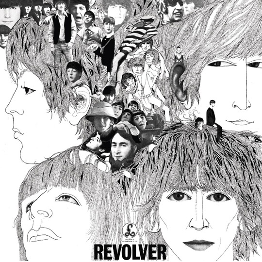

REVOVER

El séptimo álbum de The Beatles se lanzó a principios de agosto de 1966. Luego del lanzamiento de Rubber Soul, el grupo se embarcó en lo que sería su última gira de conciertos en el Reino Unido y luego de un largo receso, regresaron a Abbey Road para grabar continuamente durante tres meses.
El álbum entró en la lista del Reino Unido en el no. 1 donde disfrutó de siete semanas en ese lugar de una impresionante serie general de 34 semanas.
Los temas del album "Revolver" son: